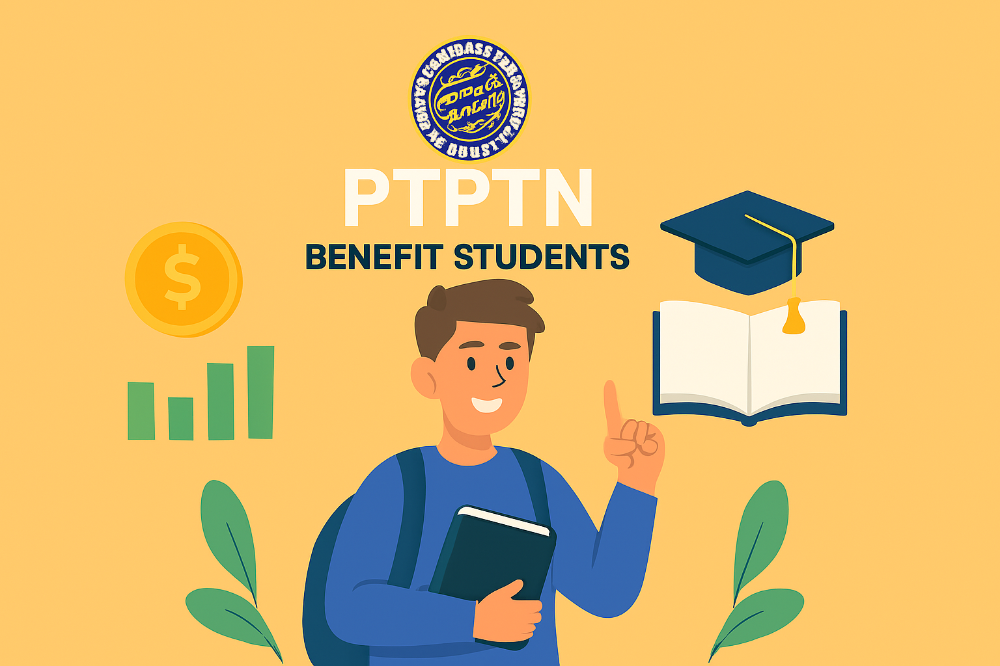
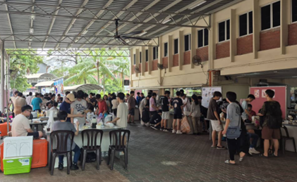

By ONG SIOK VOON | Sept 1, 2025
A new survey reveals how young Malaysians really feel about dating apps—from cautious curiosity to quiet optimism. Are these platforms a gateway to genuine connection, or just digital distractions? Read more…
By JARED LEE KAI XUAN | Aug 28, 2025

For Idham and thousands of Malaysian students, the PTPTN loan is more than aid — it’s a lifeline to education, discipline, and dreams for the future.
Read more…
By LEW JIA HUI | Aug 16, 2025

As AI becomes a daily tool for students and professionals, young Malaysians warn of its hidden costs — from lost skills to misinformation and overdependence.
Read more…
By LEW JIA HUI | Aug 17, 2025

From sizzling egg omelets to supplier hunts, TARUMT students discover that pop-up stores offer more than food — they’re a crash course in entrepreneurship.
Read more…